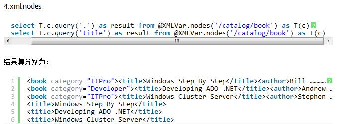

-
关于null
表示不知道，这些null值在利用上面where子句后的运算符时，有可能造成数据丢失，如addr字段 where Gender="M"where Gender!="M"这两条语句返回的数据行加起来并不是整个表中的所有数据,还有一种where Gender IS NULL
-
查看执行时间和cpu占用时间,对I/O的操作情况
set statistics time on
select * from dbo.Product
set statistics time offset statistics io on
select * from dbo.Product
set statistics io off

扫描计数：索引或表扫描次数
逻辑读取：数据缓存中读取的页数
物理读取：从磁盘中读取的页数
预读：查询过程中，从磁盘放入缓存的页数
lob逻辑读取：从数据缓存中读取，image，text，ntext或大型数据的页数
lob物理读取：从磁盘中读取，image，text，ntext或大型数据的页数
lob预读：查询过程中，从磁盘放入缓存的image，text，ntext或大型数据的页数 -
Select查询艺术
保证不查询多余的列与行。尽量避免select * 的存在，使用具体的列代替*，避免多余的列
使用where限定具体要查询的数据，避免多余的行
使用top，distinct关键字减少多余重复的行
慎用distinct关键字distinct在查询一个字段或者很少字段的情况下使用，会避免重复数据的出现，给查询带来优化效果。
但是查询字段很多的情况下使用，则会大大降低查询效率,这个时候带distinct的语句cpu时间和占用时间都高于不带distinct的语句。原因是当查询很多字段时，如果使用distinct，数据库引擎就会对数据进行比较，过滤掉重复数据，然而这个比较，过滤的过程则会毫不客气的占用系统资源，cpu时间。慎用union关键字关键字主要功能是把各个查询语句的结果集合并到一个结果集中返回给你。
满足union的语句必须满足：1.列数相同。 2.对应列数的数据类型要保持兼容。
执行过程：依次执行select语句-->>合并结果集--->>对结果集进行排序，过滤重复记录。
对结果集排序过滤占用了点时间，union all相对于union是不过滤的，使用union all能对union进行一定的优化。判断表中是否存在数据select count(*) from product
select top(1) id from product //完胜连接查询的优化首先你要弄明白你想要的数据是什么样子的，然后再做出决定使用哪一种连接，这很重要。
各种连接的取值大小为：
内连接结果集大小取决于左右表满足条件的数量
左连接取决与左表大小，右相反。
完全连接和交叉连接取决与左右两个表的数据总数量
select * from
( (select * from orde where OrderId>10000) o left join orderproduct op on o.orderNum=op.orderNum )
select * from
( orde o left join orderproduct op on o.orderNum=op.orderNum )
where o.OrderId>10000
上面比下面节省时间
如果你同时修改或删除过多数据，会造成cpu利用率过高从而影响别人对数据库的访问。可以采取分批操作数据。delete product where id<1000
delete product where id>=1000 and id<2000
delete product where id>=2000 and id<3000
-
Merge
Merge关键字是一个神奇的DML关键字。它在SQL Server 2008被引入，它能将Insert,Update,Delete简单的并为一句
merge [into] [目标表]
using <源表>
on 条件 when matched 操作 when not matched 操作;首先，请参看两张表 TableThis和TableThat:

可以看到，这两张表中的内容还是比较简单的，两张表通过一个tbThisID进行主键和外键的关联
merge into TableThat as a
using TableThis as b
on a.tbThisID = b.tbThisID
when matched then
update set a.tbContent=a.tbContent+'-'+b.tbThisPhone
when not matched then
insert (tbThisID,tbContent)
values(b.tbThisID,b.tbThisPhone);
这样 就可以将两个表中间的数据进行同步并且进行更新，确实很方便，最终得到结果为：

但是如果想让匹配的数据删除掉，并且如果子表中没有数据就插入，这个该如何用呢，当然得涉及到delete的操作了
merge into TableThat as a
using TableThis as b
on a.tbThisID = b.tbThisID
when matched then
delete
when not matched then
insert (tbThisID,tbContent)
values(b.tbThisID,b.tbThisPhone);

-
窗口函数
SQL Server提供了4个排名函数:ROW_NUMBER(), RANK(), DENSE_RANK()和 NTILE()。下面通过示例重点谈谈这四个函数的使用。
1、ROW_NUMBER() 返回结果集分区内行的序列号，每个分区的第一行从 1 开始。ORDER BY 子句可确定在特定分区中为行分配唯一 ROW_NUMBER 的顺序。
ROW_NUMBER() OVER(ORDER BY Score DESC) AS '序号',
with cv as(select Winner,Phone,WinTime,ROW_NUMBER() OVER(ORDER BY WinTime desc) as cc
from [Glht_Activity_test].[dbo].[HDDZPWinner])
select *
from cv
where cc between 2 and 6
1 2 3 4 5 6 7 82、RANK()函数 返回结果集的分区内每行的排名。行的排名是相关行之前的排名数加一。如果两个或多个行与一个排名关联，则每个关联行将得到相同的排名。
RANK() OVER(ORDER BY Score DESC) AS '序号'
RANK函数和ROW_NUMBER函数类似，它们都是用来对结果进行排序。
不同的是，ROW_NUMBER函数为每一个值生成唯一的序号，而RANK函数为相同的值生成相同的序号。 1 2 3 4 4 6 7DENSE_RANK()函数 RANK() OVER(ORDER BY Score DESC) AS '序号'
返回结果集分区中行的排名，在排名中没有任何间断。行的排名等于所讨论行之前的所有排名数加一。如果有两个或多个行受同一个分区中排名的约束，则每个约束行将接收相同的排名。
1 2 3 4 4 5 6NTILE() NTILE函数把结果中的行关联到组，并为每一行分配一个所属的组的编号，编号从一开始。对于每一个行，NTILE 将返回此行所属的组的编号。 如果分区的行数不能被 integer_expression 整除，则将导致一个成员有两种大小不同的组。按照 OVER 子句指定的顺序，较大的组排在较小的组前面。
NTILE(6) OVER(ORDER BY ClassId DESC) AS '组编号'
1 2 3 3 3 4 5 5 6 6 6 6 6 7 8 9 1 2 3 （组编号：1） 3 3 4 （组编号：2）
5 5 6 （组编号：3） 6 6 6 （组编号：4）
6 7 8 （组编号：5） 9 （组编号：6） -
分区函数
partition by关键字是分析性函数的一部分，它和聚合函数不同的地方在于它能返回一个分组中的多条记录，而聚合函数一般只有一条反映统计值的记录，partition by用于给结果集分组，如果没有指定那么它把整个结果集作为一个分组
学号 班级 成绩
不按照班进行成绩排名：select *,row_number() over(order by Score desc) as Sequence from Student
分班后进行成绩排名：select *,row_number() over(partition by Grade order by Score desc) as Sequence from Student
语法形式：row_number() over (partition by COL1 order by COL2)
解释：根据COL1分组，在分组内部根据 COL2排序，而此函数计算的值就表示每组内部排序后的顺序编号（组内连续的唯一的)
-
数据库中含有完全重复的行
删除数据库中完全重复的行,其他重复数据只剩下一条
with ss as( select * ,row_number() over(partition by id order by id desc) as no
from [cc].[dbo].[sametable])
delete from ss where ss.no!=1 -
多行变一行的问题
 变成
变成 //stuff(param1, startIndex, length, param2) 将param1中自startIndex(SQL中都是从1开始，而非0)起，删除length个字符，然后用param2替换删掉的字符
//stuff(param1, startIndex, length, param2) 将param1中自startIndex(SQL中都是从1开始，而非0)起，删除length个字符，然后用param2替换删掉的字符
select distinct a.id,
stuff((select ','+test from t1 b where a.id=b.id for xml path('')),1,1,'')
from t1 a -
一个一行变多行的问题
变成
//可以使用用到了sql xml，用节点符号替换了逗号，然后用 C.V.value 通过节点把他分离显示
select a.id,b.txt from
(select id,txt=convert(xml,'<root><v>'+replace(txt,',','</v><v>')+'</v></<root>') from t1) as a
outer apply
(select txt=C.v.value('.','nvarchar(100)') from a.txt.nodes('/root/v')C(v) ) as b -
公用表达式CTE
公用表（CTE）表达式可以分为递归公用表表达式和非递归公用表表达式.
非递归公用表表达式（CTE）是查询结果仅仅一次性返回一个结果集用于外部查询调用。并不在其定义的语句中调用其自身的CTE
WITH expression_name [ ( column_name [,...n] ) ]
AS ( CTE_query_definition )
with exp as( select * from t1)
select id,name from exp一个with可以定义多个CTE
with v1 as ( select * from t1),v2 as ( select * from t2)
select id,name from v1 join v2 on v1.id=v2.id递归公用表表达式很像派生表（Derived Tables ），指的是在CTE内的语句中调用其自身的CTE.与派生表不同的是，CTE可以在一次定义多次进行派生递归.
-
sql中常见函数
1. dateadd(datepart,number,date) :在向指定日期加上一段时间的基础上，返回新的 datetime 值。 datepart:
Year yy, yyyy
quarter qq, q
Month mm, m
dayofyear dy, y
Day dd, d
Week wk, ww //一年内第几个星期
weekday dw //星期几
Hour hh
minute mi, n
second ss, s
millisecond ms
number:是个整数
date:是在哪个日期上增
如： select dateadd(yy,2,getdate()) //2018-11-10 14:36:35.0402. datediff(datepart,startdate,enddate) :返回跨两个指定日期的日期和时间边界数。 不是纯减字面值，而是具体相差多少，换算成datepart单位
select datediff(hh,'2016-11-10 12:00:00.000','2016-11-11 13:10:00.000') //253. datename(datepart,date) :返回代表指定日期的指定日期部分的字符串。 weekday (dw) 日期部分返回星期几（星期天、星期一等）
select datename(year,'2016-11-10 12:00:00.000') //2016
select datename(weekday,'2016-11-10 12:00:00.000') //星期四4. datepart(datepart,date) :返回代表指定日期的指定日期部分的整数。 weekday (dw) 日期部分返回对应于星期中的某天的数，例如：Sunday = 1、Saturday = 7。weekday 日期 部分产生的数取决于 SET DATEFIRST 设定的值，此命令设定星期中的第一天。
select datepart(dd,'2016-11-10') //105. getdate() :按标准内部格式，返回当前系统日期和时间 而 getutcdate() :返回表示当前 UTC 时间（世界时间坐标或格林尼治标准时间）的 datetime 值
getdate() //2016-11-10 06:58:03.6276. month(date) :是返回表示指定日期中的月份的整数。 而 year(date) 是返回表示指定日期中的年份的整数。6. ceiling(numeric_expression) :返回大于或等于所给数字表达式的最小整数。>=7. floor(numeric_expression) :返回小于或等于所给数字表达式的最大整数。>=8. PI() :返回 PI 的常量值9. rand() :返回 0 到1 之间的随机float 值。10. round( numeric_expression , length [ , function ] ) :返回数字表达式并四舍五入为指定的长度或精度11. ASCII(character_expression) :返回字符表达式最左端字符的 ASCII 代码值。12. char( integer_expression) :将 int ASCII 代码转换为字符的字符串函数。 integer_expression:介于 0 和 255 之间的整数。如果整数表达式不在此范围内，将返回 NULL 值。13. charindex(expression1,expression2[,start_location])) :返回字符串中指定表达式的起始位置 start_location:在 expression2 中搜索 expression1 时的起始字符位置,如果没有给定 start_location，而是一个负数 或零，则将从 expression2 的起始位置开始搜索。14. left(character_expression,integer) :返回从字符串左边开始指定个数的字符。 integer是正整数。如果 integer为负，则返回空字符串。15. len(string_expression) :返回给定字符串表达式的字符（而不是字节）个数，其中不包含尾随空格。16. datalength(string_expression) :返回任何表达式所占用的字节数，包含尾随空格。17. lower(character_expression) :将大写字符数据转换为小写字符数据后返回字符表达式18. upper(character_expression) :将小写字符数据转换为大写字符数据后返回字符表达式19. ltrim(character_expression) :删除起始空格后返回字符表达式20. rtrim(character_expression) :删除结尾空格后返回字符表达式21. patindex(’%pattern%’ , expression) :返回指定表达式中某模式第一次出现的起始位置；如果在全部有效的文本和字符数据类型中没有找到该模式， 则返回零
select patindex('%wonderful%', notes) from t122. replace('string_expression1','string_expression2','string_expression3') :用第三个表达式替换第一个字符串表达式中出现的所有第二个给定字符串表达式。
select replace('abcdefghicde','cde','xxx')23. reverse(character_expression) :返回字符表达式的反转24. space(integer_expression) :返回由重复的空格组成的字符串。 integer_expression 是表示空格个数的正整数。如果 integer_expression 为负，则返回空字符串。25. stuff(character_expression,start,length ,character_expression) :删除指定长度的字符并在指定的起始点插入另一组字符。
//第一个字符串 (abcdef) 中删除从第二个位置（字符 b）开始的三个字符，然后在删除的起始位置,插入第二个字符串，创建并返回一个字符串 SELECT STUFF('abcdef', 2, 3, ’ijklmn’) // aijklmnef26. substring(expression,start,length) :返回子字符串。27. case表达示CASE [input_expression]
when when_expression1 THEN result_expression1
when when_expression2 THEN result_expression2
else else_result_expression
END
SELECT TOP 4 CASE EmployeeID
WHEN 1 THEN 'CareySon'
WHEN 2 THEN 'Jack'
WHEN 3 THEN 'Tom'
ELSE 'UNKNOW'
END AS NameList,EmployeeID
FROM [AdventureWorks].[HumanResources].[Employee]
ORDER BY EmployeeID
SELECT TOP 4 NameList=CASE
WHEN EmployeeID=1 THEN 'CareySon'
WHEN EmployeeID=1 THEN 'Jack'
WHEN EmployeeID=3 THEN 'Tom'
ELSE 'UNKNOW'
END,EmployeeID
FROM [AdventureWorks].[HumanResources].[Employee]
ORDER BY EmployeeID
//或者在order by 中使用
ORDER BY
CASE WHEN StateProvinceID=9 THEN AddressID END DESC,
CASE WHEN StateProvinceID=8 THEN AddressID END27. @@Error :返回最后执行的 Transact-SQL 语句的错误代码。 由于 @@ERROR 在每一条语句执行后被清除并且重置，应在语句验证后立即检查它，或将其保存到一个局部变量中以备事后查看
update authors SET au_id = '172 32 1176' where au_id = "172-32-1176" if @@ERROR = 547
print "A check constraint violation occurred"
begin transaction
declare @errorNum int
set @errorNum=0
insert into [cc].[dbo].[splitT] values(1,'test')
set @errorNum=@errorNum+@@ERROR
update [cc].[dbo].[splitT] set id=3 where name='dd'
set @errorNum=@errorNum+@@ERROR
if(@errorNum)<>0 begin print 'fail'
rollback transaction end
else begin commit transaction end28. @@ROWCOUNT :返回受上一语句影响的行数，返回值类型为 int 整型 我们通常可以通过update、insert语句并使用@@ROWCOUNT来检测是否更改了任何一些行。
UPDATE authors SET au_lname = 'Jones'
WHERE au_id = '999-888-7777'
IF @@ROWCOUNT = 0
print 'Warning: No rows were updated'
ROWCOUNT_BIG() 与@@rowcount类似,除非 ROWCOUNT_BIG 的返回类型是 bigint29. @@IDENTITY :返回最后插入的标识值。 在一条 INSERT、SELECT INTO 或大容量复制语句完成后，@@IDENTITY 中包含此语句产生的最后的标识值。若此语句没有影响任何有标识列的表，则 @@IDENTITY 返回 NULL。若插入了多个行，则会产生多个标识值，@@IDENTITY 返回最后产生的标识值.若 INSERT 或 SELECT INTO 语句失败或大容量复制失败，或事务被回滚，则 @@IDENTITY 值不会还原为以前的设置。
select ID_Num = identity(int, 1, 1),* into NewTable from [cc].[dbo].[splitT]30. isnull(expression,replacement_value) :使用指定的替换值替换 NULL。 ISNULL(price, $10.00);31. isdate(expression) :确定输入表达式是否为有效的日期 如果输入表达式是有效的日期，那么 ISDATE 返回 1；否则，返回 032. isnumeric(expression) :确定表达式是否为一个有效的数字类型。 当输入表达式得数为一个有效的整数、浮点数、money 或 decimal 类型，那么 ISNUMERIC 返回 1；否则返回 0。33. newid() :创建 uniqueidentifier 类型的唯一值。 select newid() // 763AE4F9-8C57-4526-8FB2-3138390DA99E
select lower(replace(newid(),'-','')) //c722195cc2294531a904beedce44fc6e34. nullif(expression1,expression2) :如果两个指定的表达式相等，则返回空值。 如果两个表达式不相等，NULLIF 返回第一个 expression 的值。如果相等，NULLIF 返回第一个expression 类型的空值。 -
sql xml解析
即： DECLARE @x XML
SELECT @x = '
<People>
<dongsheng>
<Info Name="Email">dongsheng@xxyy.com</Info>
<Info Name="Phone">678945546</Info>
<Info Name="qq">36575</Info>
</dongsheng>
</<People>'sql索引都是从1开始的，xml要区分大小写的 query本身是获取节点本身的 select @x.query('People/dongsheng/Info[1]') //< Info Name="Email">dongsheng@xxyy.com</Info> 可以加个data()来获取里面的值 select @x.query('data(People/dongsheng/Info[@Name])[1]') //dongsheng@xxyy.com
select @x.query('data(People/dongsheng/Info[@Name])[2]') //678945546
select @x.query('data(People/dongsheng/Info[@Name="Email"])') //dongsheng@xxyy.com
//但是这样得到的都是xml本身的类型，我们需要转换一下，用到convert函数,类似如下
select convert(nvarchar(50),@x.query('data(People/dongsheng/Info[@Name])[1]'))
除了query()还有value()来查询，value也是用来获取值的，需要两个参数，后面是指定输出的类型，相当于省略了convert，是一个整合体，
也可以不用data()，但必须括号包起来，query不用
select @x.value('data(People/dongsheng/Info)[1]','varchar(30)')
select @x.value('(People/dongsheng/Info)[1]','varchar(30)')
SELECT @x.value('(/People/dongsheng/Info[@Name="Email"])[1]', 'varchar(30)')
除了上面两种外，还有利用 nodes 进行关系型数据集查询方式
nodes可以将 xml 数据类型实例拆分为关系数据，由 nodes() 方法返回的行集是未命名的行集， query()、value()、exist() 和 nodes()可以应用于 nodes() 方法的结果
nodes (XQuery) as Table(Column) //结果行集的表名称和列名称。
nodes() 函数不能直接应用于用户定义函数的结果。 若要将 nodes() 函数用于标量用户定义函数的结果，可以将该用户定义函数的结果分配给一个变量，也可以使用派生表为该用户定义函数的返回值分配一个列别名，然后使用 CROSS APPLY 从该别名中选择。
SELECT T2.Loc.query('.') FROM T CROSS APPLY Instructions.nodes('/root/Location') as T2(Loc) //query('.')表示查询根节点下所有
SELECT T.c.query('..') AS result FROM @x.nodes('/Root/row') T(c) //query('..')就表示查询有Root的所有.
//那么下面开始进行查询
SELECT Convert(varchar(30),T.C.query('.')) FROM @x.nodes('/People/dongsheng/Info[@Name="Email"]') T(C)
SELECT T.C.value('.','varchar(30)') FROM @x.nodes('/People/dongsheng/Info[@Name="Email"]') T(C)
SELECT T.C.value('(Info[@Name="Email"])[1]','varchar(30)') FROM @x.nodes('/People/dongsheng') T(C)
SELECT C.value('.','varchar(30)') FROM @x.nodes('/People/dongsheng/Info') T(C) WHERE C.value('(.[@Name="Email"])[1]','varchar(30)') IS NOT NULL
SELECT C.value('.','varchar(30)') FROM @x.nodes('/People/dongsheng/Info') T(C) WHERE C.exist('(.[@Name="Email"])[1]') = 1DECLARE @x XML
SELECT @x =
'<Peoples>
<People Name="tudou" Sex="女" />
<People Name="choushuigou" Sex="女"/>
<People Name="dongsheng" Sex="男" />
</Peoples>'
SELECT v.value('@Name[1]','VARCHAR(20)') AS Name , v.value('@Sex[1]','VARCHAR(20)') AS Sex
FROM @x.nodes('/Peoples/People') x(v)SQL Server 中对XML数据的五种基本操作 1.xml.exist 输入为XQuery表达式，返回0，1或是Null。0表示不存在，1表示存在，Null表示输入为空
2.xml.value 输入为XQuery表达式，返回一个SQL Server标量值
3.xml.query 输入为XQuery表达式，返回一个SQL Server XML类型流
4.xml.nodes 输入为XQuery表达式，返回一个XML格式文档的一列行集
5.xml.modify 使用XQuery表达式对XML的节点进行insert , update 和 delete 操作。
 -
sql优化
避免使用count(*)获得表的记录数 (1)为了获得表中的记录数，我们通常使用下面的SQL语句：
SELECT COUNT(*) FROM dbo.orders
这条语句会执行全表扫描才能获得行数。
(2)但下面的SQL语句不会执行全表扫描一样可以获得行数：
SELECT rows FROM sysindexes
WHERE id =OBJECT_ID('dbo.Orders') AND indid <2
动态sql语句 使用全文搜索搜索文本数据，取代like搜索 全文搜索让你可以实现like不能完成的复杂搜索，如搜索一个单词或一个短语，搜索一个与另一个单词或短语相近的单词或短语，或者是搜索同义词;
实现全文搜索比实现like搜索更容易(特别是复杂的搜索);全文搜索 是在建立了全文索引的基础上的
1.CONTAINS搜索方式
①--搜索文章内容含有张三或者李四的记录
SELECT * FROM Article WHERE CONTAINS(ArticleContent,'"张三" OR "李四"')
②--搜索文章内容中含有以'认'开始的词的记录
SELECT * FROM Article WHERE CONTAINS(ArticleContent,'"认*"') --认为，认识 ③--加权词搜索的方式 - 给多个搜索条件加上权值，加权值越高的记录排在越前面，当以多个字符串作为搜索条件搜索记录时，可以为不同的字符串加上一个加权值，这个加权值是介于0和1之间的数值，加权值越高的记录排在越前面。事实上在该SELECT语句的返回结果集里，并没有按加权值的大小来排序，因为WEIGHT不影响CONTAINS查询的结果，只会影响CONTAINSTABLE查询中的排序:
--在CONTAINS搜索中，权重并不影响排序
SELECT * FROM Article
WHERE CONTAINS(ArticleContent,'ISABOUT ("北京" weight(0.9),"上海" weight(0.6),"广州" weight(0.5))')
④--邻近词搜索的方式 - 可以搜索与另一个词或短语相邻近的词或短语:
--搜索文章内容中第二个词在第一个词附近的记录
SELECT * FROM Article WHERE CONTAINS(ArticleContent,'"张三" NEAR "李四"')
2. FREETEXT搜索方式
FREETEXT搜索方式与CONTAINS搜索方式相比，其搜索结果表现都十分不精确，因为FREETEXT的搜索方式是将一个句子中的每个单字拆分开进行搜索的。使用CONTAINS搜索方式搜索条件为“教育部”的记录，那么搜索出来的将是记录里包含“教育部”三个字符串的记录。
--搜索文章内容中包含'程'字和'社'字的记录
SELECT * FROM Article WHERE FREETEXT(ArticleContent,'程社')
3.CONTAINSTABLE搜索方式 - 事务和锁
- 表分区
- 三大范式
- 存储过程